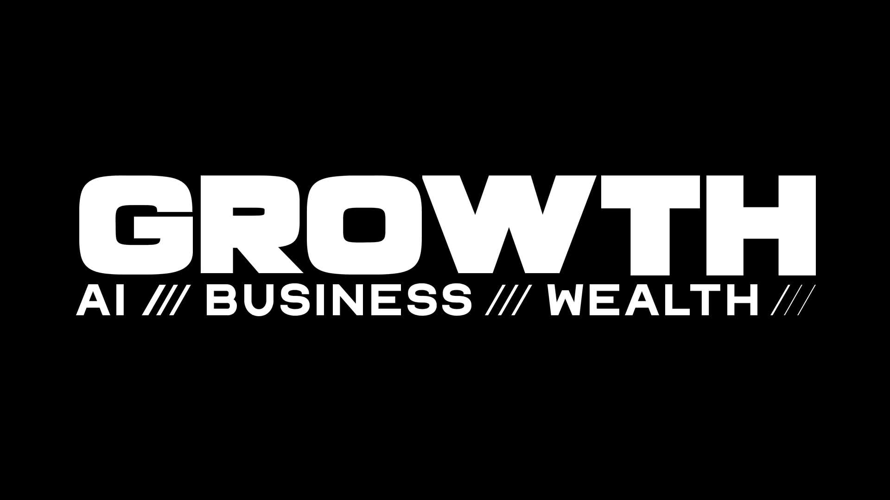
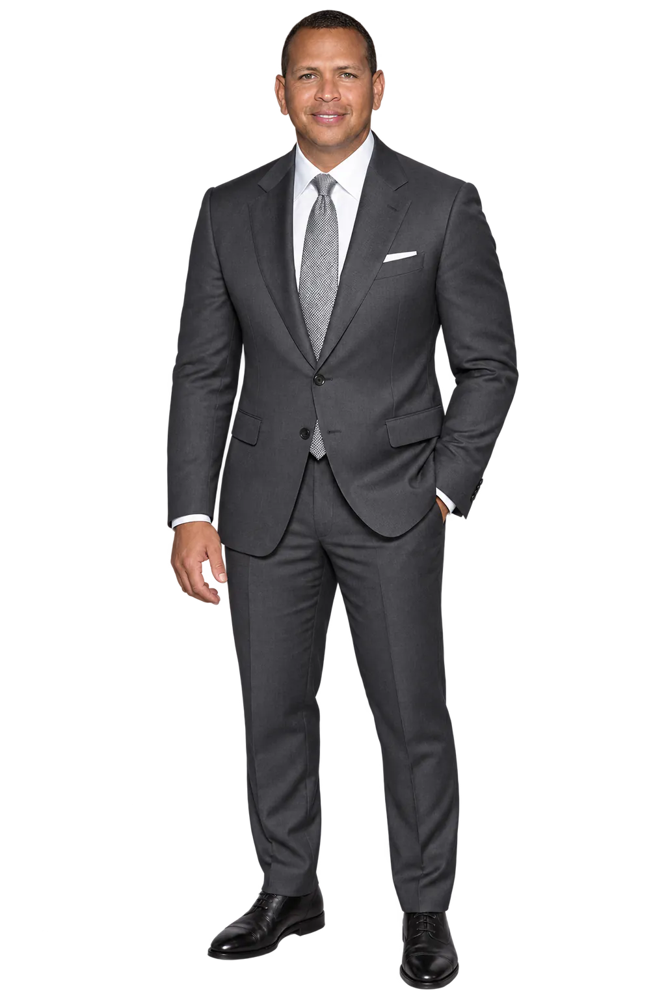
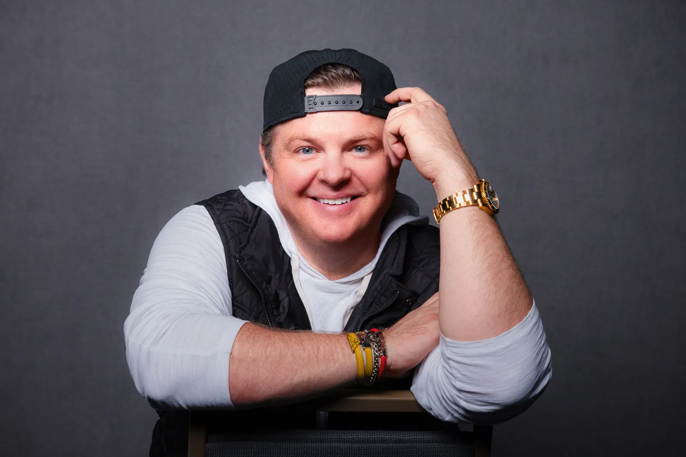
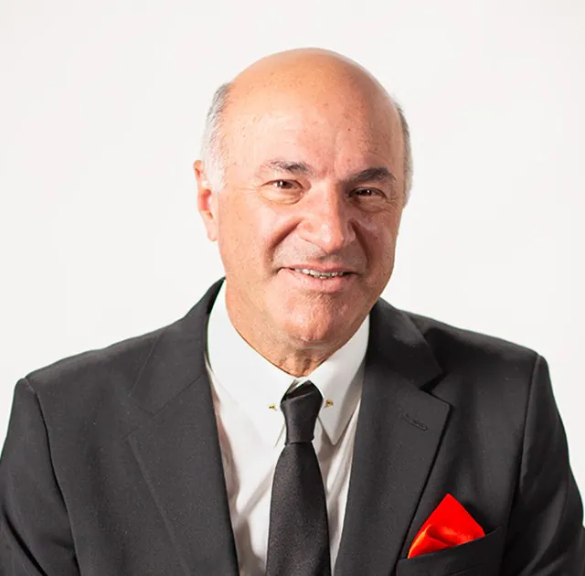
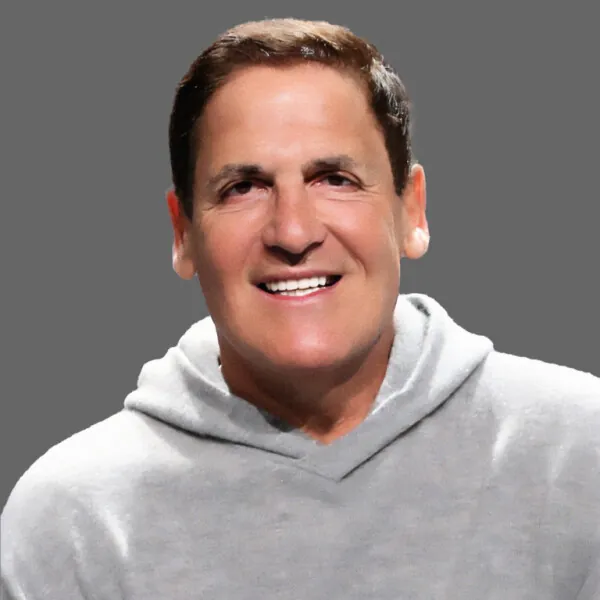
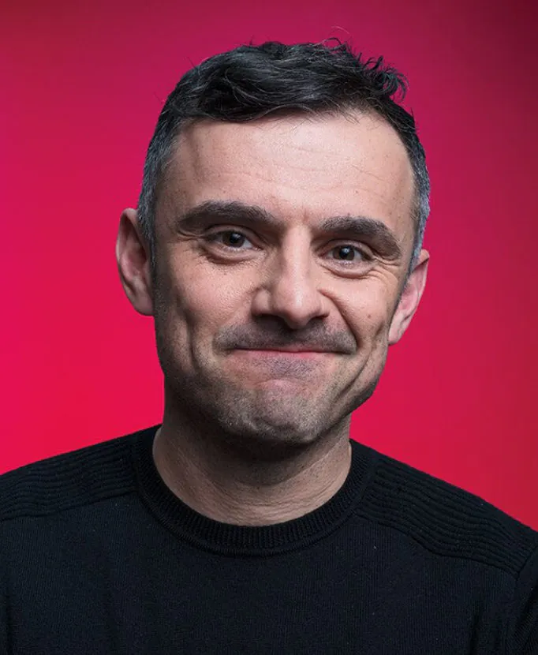

Growth — Mark Cuban, Martha Stewart, Kevin O’Leary, Alex Rodriguez, Andrew Cordle and Gary Vee
Mark
Martha
Stewart
Kevin
O’Leary

Alex
Rodriguez

Andrew
Cordle
Gary
Vee




Learn practical approaches to business growth, AI, and wealth from experienced leaders.

Meet founders, investors, and business owners who share your ambition.

Turn what you learn into concrete steps for your business and financial goals.

Entrepreneur · Investor · Founder of Growth Tour
Andrew Cordle has built and sold businesses, achieved multiple multimillion-dollar exits, and shared his insights on stages across all 50 U.S. states and 22 countries.
With Growth Tour, he’s bringing that experience into one room—connecting entrepreneurs, investors, and business leaders with influential voices in business, AI, and wealth. His mission is to turn ambitious ideas into practical strategies, meaningful connections, and lasting growth.




Explore the tour stops and choose the city that works for you.

ONE STAGE.
MANY PERSPECTIVES.
Take what you learn
back to your business.
GROWTH is for entrepreneurs, business owners, and investors seeking practical insights into business, AI, and wealth.
Bring your ticket and a photo ID.
Yes. Every attendee, including your guest, needs a valid ticket.
Accessible seating varies by venue. Contact the GROWTH team before booking to discuss your needs and confirm availability.
Recording and livestreaming are not permitted. Additional camera restrictions may apply at the venue.
Contact the GROWTH team or speak with event staff about available upgrades.
All ticket sales are final. Event changes are reviewed case by case. To request credit toward a future event or a ticket transfer, contact the GROWTH team at least 15 days before the event.
There are no dedicated hotel room blocks. You can book directly with a nearby hotel.
Business casual is recommended. Bring an extra layer for cooler indoor temperatures.
Some ticket experiences may include speaker lunches or photo opportunities. Check what is included with your ticket.
We do not publish a detailed agenda. Live programming may change.